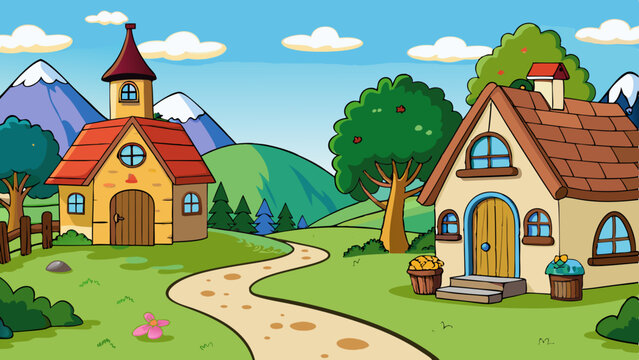
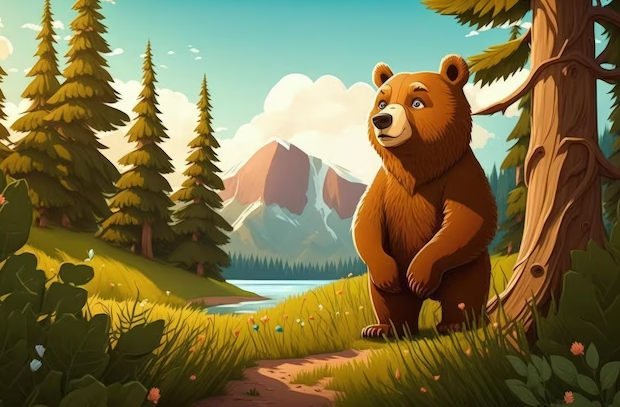
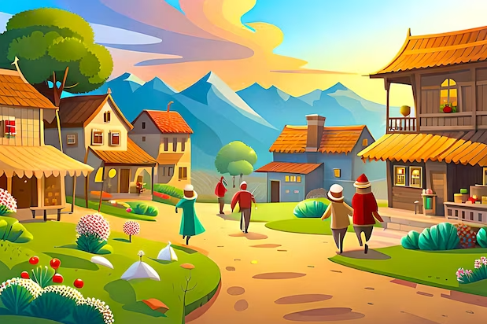

Bir varmış bir yokmuş, evvel zaman içinde bir köy varmış. Bu köyde her şey çok huzurluymuş.
Köyde yaşayan küçük bir çocuk, ormanda kaybolmuş. Cesurca yolculuğa çıkmış.
Ormanda büyük bir ayıyla karşılaşmış. Ayı konuşabiliyormuş ve ona yardım etmek istemiş.
Sonunda köye geri dönmüşler ve herkes çok mutlu olmuş. Ayı da köyde yaşamaya başlamış.
